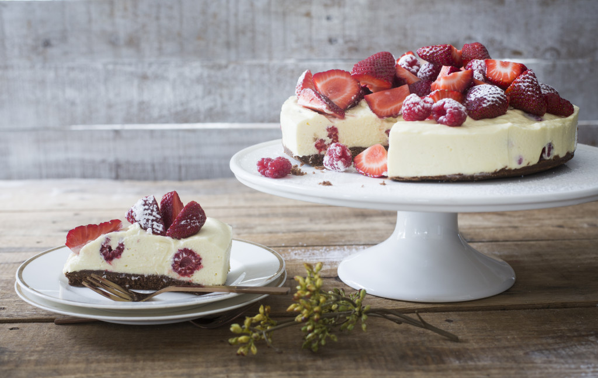
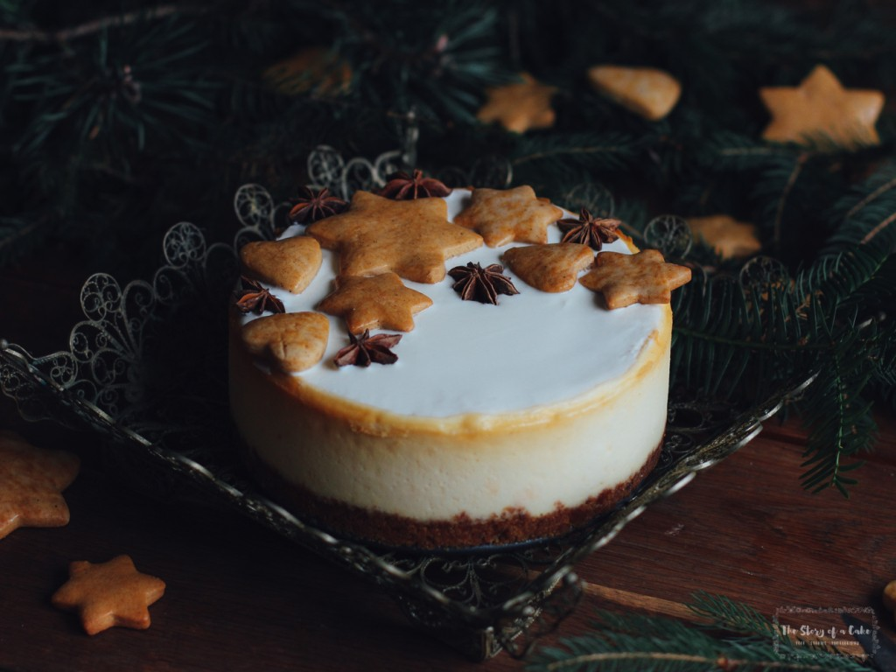
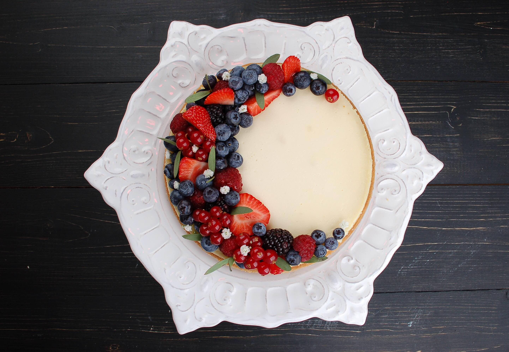
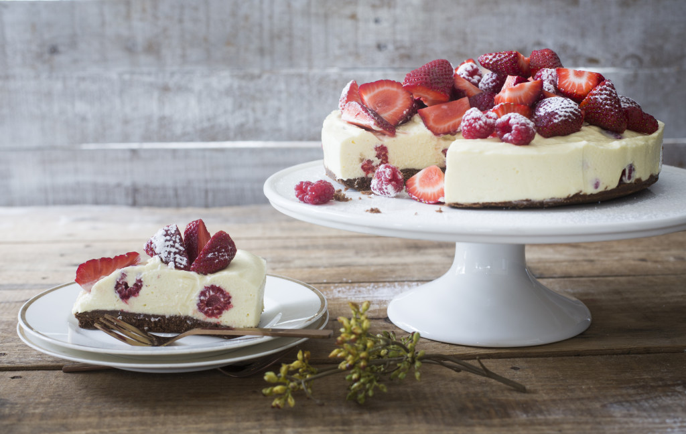
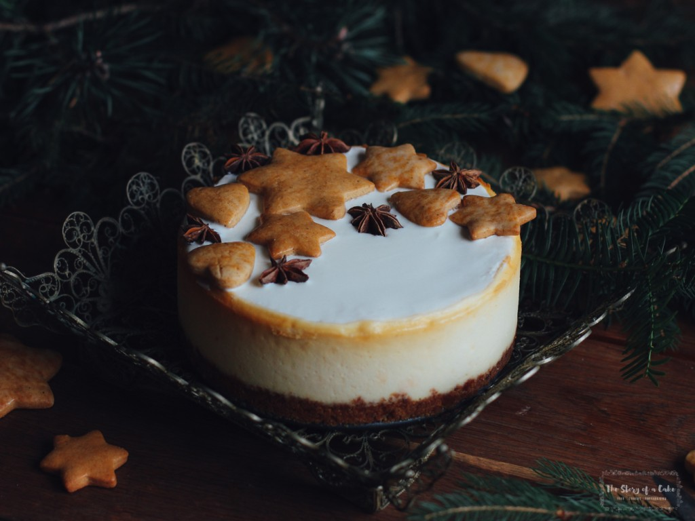
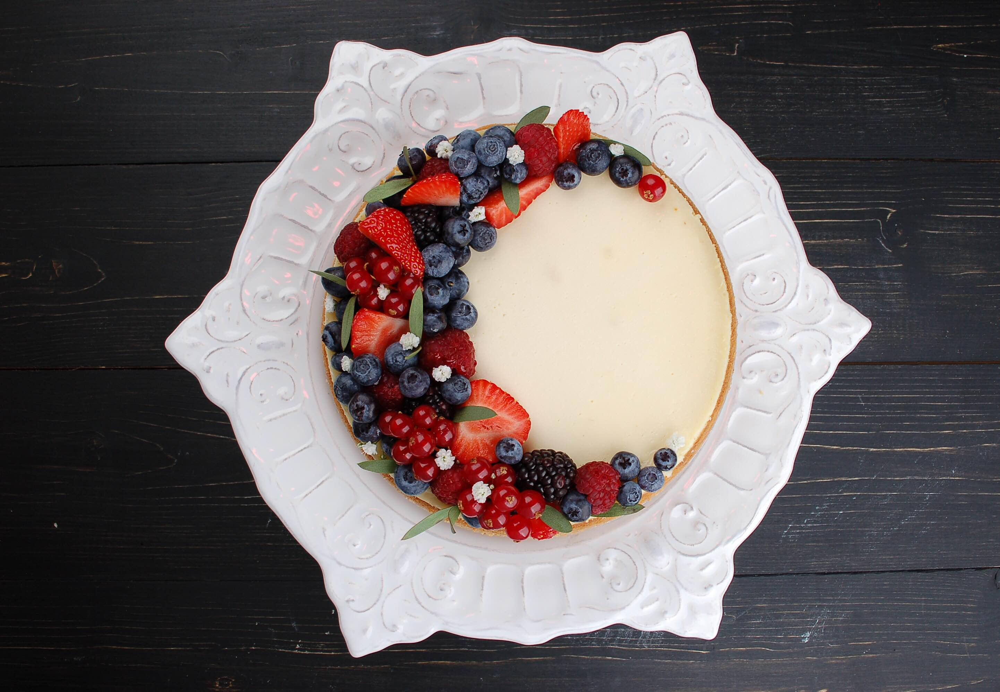

Зима - время, богатое на шикарные сезонные продукты, такие как клюква, айва, фейхоа. И нужно почаще добавлять их в свой рацион.
Идеальный торт – нежный, сливочный, тающий во рту чизкейк.
Самое время совместить эти вещи в замечательном зимнем чизкейке.
Мало кто может устоять перед таким соблазном и ограничиться одним кусочком!




ИНГРЕДИЕНТЫ
- 3 яйца
- 6 ст. л. сахара
- 1 ч. л. ванильного сахара
- 2 ст. л. муки
- 1/2 ст. л. картофельного крахмала
- сливочное масло для смазывания
- сливочный ликер для пропитки («Бэйлиз», «Сан-Бренданз», «Амаретто-крем»)
- 170 г белого шоколада
- 1/4 стакана сливок жирностью 33–35%
- ягоды для украшения
- сливочное масло для смазывания
Для начинки:
- 700 г мягкого сливочного сыра («Филадельфия», «Альметте»)
- 5 яиц
- 1 желток
- 1,5 стакана сахара
- 230 г жирной сметаны
- 1 ч. л. лимонного сока
- 2 ч. л. ванильного сахара
ПОШАГОВЫЙ РЕЦЕПТ ПРИГОТОВЛЕНИЯ
Шаг 1
Для основы взбейте яйца с сахаром и ванильным сахаром в глубокой жаропрочной миске, поместите ее на водяную баню над кастрюлей с водой, нагретой до 70–80 °С, и, непрерывно взбивая венчиком, доведите массу до температуры 40–50 °С – ее объем должен увеличиться в 2–3 раза. Снимите миску с водяной бани и охладите массу до 18–20 °С. Добавьте просеянную с крахмалом муку и аккуратно перемешайте до получения однородного теста.Шаг 2
Круглую разъемную форму диаметром 20–22 см выстелите пергаментом, смазанным маслом. Влейте тесто и выпекайте в разогретой до 200 °С духовке, пока бисквит не зарумянится, а воткнутая в него деревянная палочка не будет выходить сухой, 20–30 мин. Охладите. Разрежьте вдоль на две части: нижнюю (толщиной 2/3) и верхнюю (1/3). Меньшую часть мелко искрошите для посыпки. Большую часть положите в глубокую круглую форму диаметром 20–22 см (лучше всего силиконовую), пропитайте ее ликером. Можно воспользоваться той же формой, в которой вы запекали бисквит – тогда нужно увеличить высоту бортиков, вставив внутрь по кругу широкую полосу плотной бумаги, обернутой промасленной фольгой.Шаг 3
Для начинки тщательно смешайте вместе все ингредиенты в блендере или кухонном комбайне на медленной скорости, следя за тем, чтобы в массу попало как можно меньше воздуха. Перелейте начинку в подготовленную форму с бисквитом, установите ее на глубоком противне, влейте в противень горячую воду слоем не более 1 см и поместите в разогретую до 160 °С духовку. Выпекайте, постепенно доливая в противень горячую воду взамен испарившейся, от 1 до 2 ч, пока начинка не «схватится».Шаг 4
Выключите духовку, приоткройте дверцу и дайте чизкейку остыть в духовке до комнатной температуры. Достаньте из духовки и оставьте еще на 1 ч при комнатной температуре. Выньте из формы и уложите на блюдо.Шаг 5
Для глазури на очень слабом огне в кастрюле с толстым дном нагрейте шоколад вместе со сливками при постоянном помешивании, пока шоколад не растает и не образуется гладкая однородная масса. Покройте чизкейк глазурью, украсьте сверху ягодами и/или печеньем по желанию. Поставьте в холодильник на 8 ч. Подавайте холодным или комнатной температуры.

